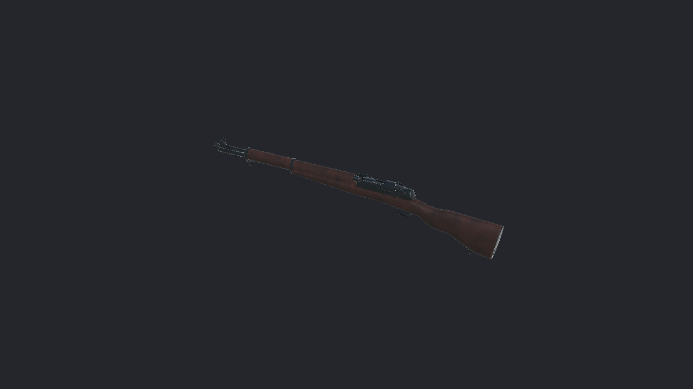
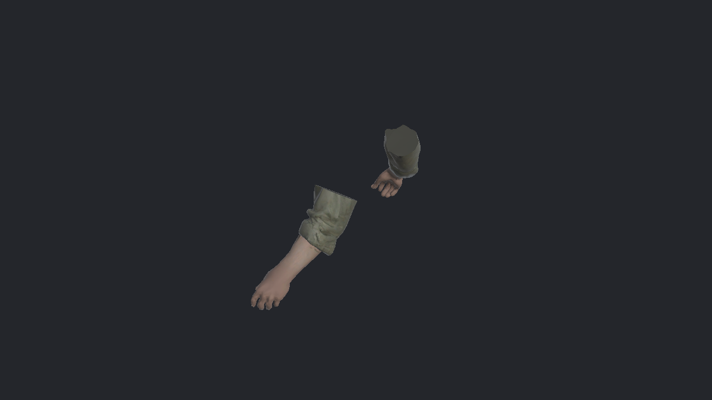
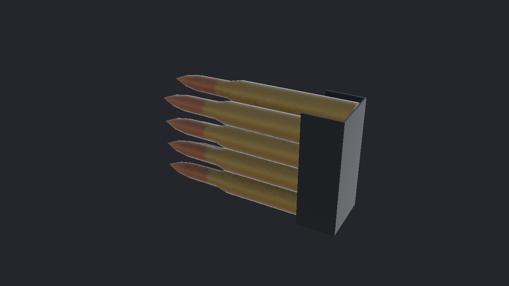
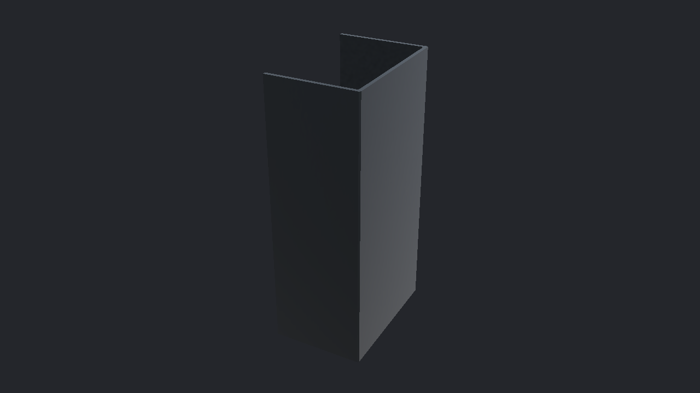
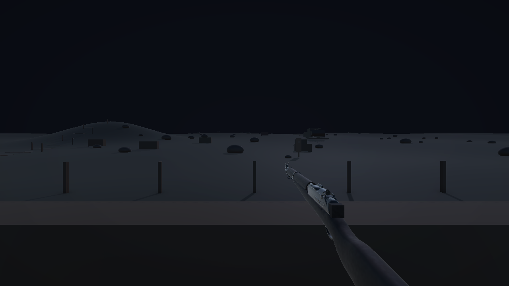

2026-10-28 · 팀 저장소 fiveriver/art · Unity 6000.3.25f1 / URP 17.3.0
| 항목 | 이번 프로젝트 확인 결과 | 상태 |
5 · SK_CH_ROK_Arms | 6,534삼각형, 유효 Humanoid, 65본, 2K 피부·소매 텍스처, 실제 스킨 메시 정적 표시 | ✅ 임포트 확인 |
6 · SM_WP_M1Garand | 1.10m, 14,924삼각형, Body·Bolt·ClipSlot, 목재·금속 2K 연결 | ✅ 임포트 확인 |
7 · SM_WP_M1Garand_Clip | 988삼각형, 탄 포함 83.21mm. 강철·황동 재질 매핑 수정 후 2K 맵 3종 연결 | ✅ 수정·재검사 |
8 · SM_WP_M1Garand_ClipEmpty | 44삼각형, 금속 길이 48.90mm, 탄 없는 형상·금속 재질 표시 | ✅ 임포트 확인 |
Art/Materials/M_WP_M1_Clip.mat과 M_WP_M1_Brass.mat에 연결. 기존 FBX GUID 유지.Dabudong.unity의 검사한 참조 Missing 0. null 메시도 별도 검사.Walk_Validation 클립 30fps / 2.733초 임포트 확인.ArtSpecTests 15개 모두 통과. 테스트만으로 텍스처 연결을 판단하지 않고 별도 실제 재질 검사 병행.Dabudong 씬의 해당 팔 SkinnedMeshRenderer 수는 0. 에셋 파일 납품과 게임 연결은 별개.RearSight·FrontSight 정리, 실제 M1 형상에 맞춘 총구·클립 배출 소켓 정합 확인.




2026-10-27 전달 ZIP은 별도 Unity 6000.6.0f1 / URP 17.6.0에서 파지·ADS·사격·장전·보행을 검수한 버전입니다. 그 결과를 이번 게임의 미완료 항목에 자동 승계하지 않았습니다. 이전에 수용한 오른손 약 0.014mm의 미세 접촉과 내부 정합 미확인 범위도 유지합니다.
팔 이미지는 검수용 복제본에서 Animator를 끄고 SkinnedMeshRenderer의 화면 밖 갱신을 켜 실제 스킨 메시로 렌더했습니다. 정적 표면 확인용이며 런타임 파지·애니메이션 검증을 대신하지 않습니다. 원본 에셋에 해당 설정을 저장하지 않았습니다.
실측 결과: UNITY_VERIFICATION.json · 통합 안내